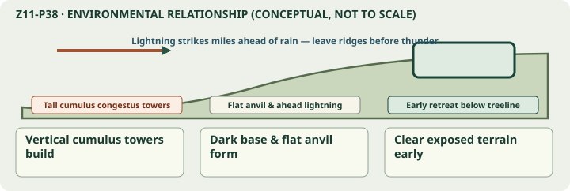

Z11-P38 · Navigation, weather and rescue · New manuscript
Recognize towering cumulus and thunderstorm anvil buildup early
Spot convective storm development early enough to clear ridges, open water and exposed camps before lightning strikes.
When it applies · Warm-season hiking, paddling, mountain travel and open-field camps during spring through autumn.
Equipment · Forecast/alert receiver, watch and mapped low/substantial shelter destinations.

Actions
- Watch fair-weather puffy cumulus clouds starting late morning: rapid vertical bubbling into tall cauliflower towers (cumulus congestus) with dark flat bases warns that thunderstorm updrafts are building.[N06, E18]
- Recognize a spreading flat icy anvil top (cumulonimbus), darkening rain curtains and sudden cool gusty outflow winds as an active mature storm—lightning routinely strikes miles ahead of rainfall.[N06, E07, E18]
- Break off summits, exposed ridges and open lakes BEFORE thunder begins; once thunder is heard, move immediately to a substantial building or enclosed hard-topped vehicle and wait 30 minutes after the last thunder.[E07, E18]
Failure recognition · Waiting on an exposed ridge or lake canoe until raindrops start falling before trying to reach safety.[E07, E18]
Verify · Identify your descent route below treeline or nearest sturdy shelter whenever towering cumulus starts building vertically.[N06, E07, ED]
Stop or change course · Audible thunder, visible flashes, darkening anvil approach or sudden cool outflow gusts end exposed travel immediately.[E07, E18]
Evidence and editorial notes
- E07 · NWS · Lightning Tips (current web edition)
- Section: If you hear thunder; when it is safe to return · Conditions: Thunderstorm and reachable substantial building or enclosed hard-topped vehicle
Support: Move to proper shelter at thunder. Wait 30 minutes after last thunder before resuming outdoor activity.
Limitations: Fabric tents, open pavilions, and trees are not lightning-safe shelters. · Conflicting evidence: None; 30-minute rule is standard NWS guidance.
Editorial note: Separates weather cover from lightning protection in Z02. · Specialist reviewer: Weather safety and emergency management
Primary source · checked 2026-11-24 - E18 · NWS · Thunderstorm Safety (current web edition)
- Section: Thunderstorm Safety > Hail, Downbursts, and Flooding · Conditions: Approaching severe thunderstorm with hail, outflow gusts, or heavy rain
Support: Outflow gusts, hail, lightning, and flash runoff can strike before rain arrives at camp; break exposed ridge travel early and secure or vacate lightweight shelters.
Limitations: Storm cells can intensify faster than backcountry foot travel can clear exposed terrain. · Conflicting evidence: None; integrates with E04 and E07.
Editorial note: Connects storm-structure warning cues to early shelter selection. · Specialist reviewer: Weather safety and emergency management
Primary source · checked 2026-11-24 - N06 · NOAA NWS · JetStream Online School for Weather (current web edition)
- Section: JetStream > Clouds, Fronts and Atmospheric Pressure · Conditions: Field weather observation and short-term storm anticipation
Support: Thickening high-to-low cloud decks, rapid barometric drops, towering cumulus building into anvils and backing/shifting winds often signal approaching frontal systems or convective storms.
Limitations: Local visual weather signs supplement—and never replace—official NWS forecasts and active warnings. · Conflicting evidence: None; separates physical weather cues from folklore sayings.
Editorial note: Grounds cloud, front, wind-shift and microclimate weather cards in Z11. · Specialist reviewer: Meteorology and outdoor leadership
Primary source · checked 2026-11-24
Current assessment · A04-N06 (2026-11-25) · Open: support partial or missing (A04): Supports common frontal pictures. Combined cloud sequence, pressure drop and wind shift claim cannot predict timing or guarantee a thunderstorm at a site. Limits: Specialist review PENDING (Meteorology and outdoor leadership); publication HOLD. All release decisions pending.
Source lineage · NOAA JetStream and NWS thunderstorm safety; new manuscript · Classification · New manuscript.